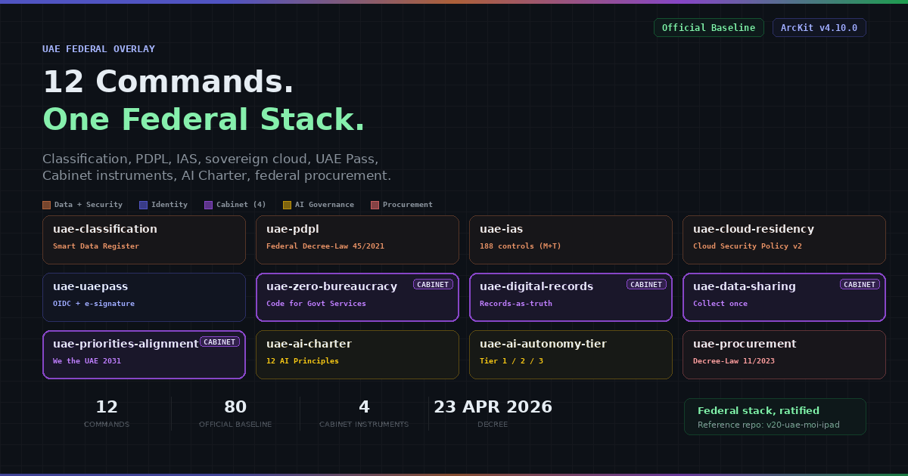

ArcKit v4.10: 12 UAE Federal Commands, Official Baseline
Twelve official-baseline commands covering the UAE federal regulatory and digital-government stack. The release walkthrough: PDPL, IAS, sovereign cloud residency, UAE Pass, the four Cabinet instruments, AI Charter, autonomy tier, federal procurement.
Read article →